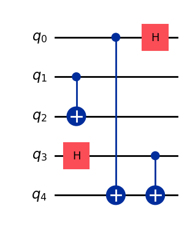
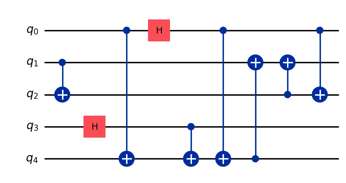
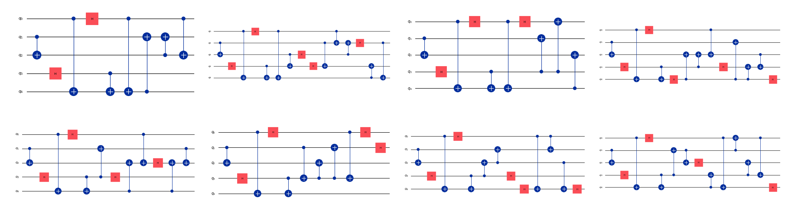
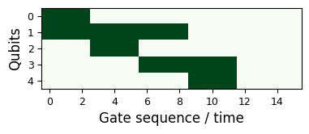
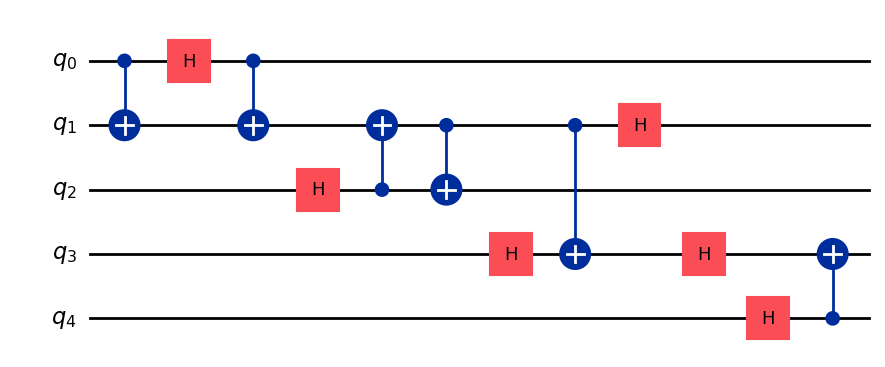
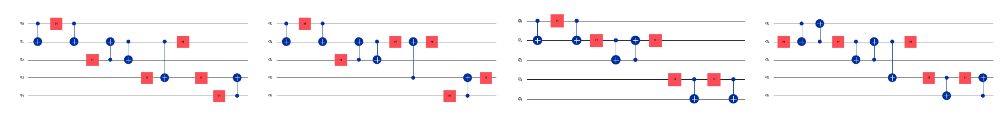

# NOTE: this notebook is designed for an old version of genQC! Please use ´pip install genQC==0.1.0 -q´
import genQC
assert genQC.__version__ in ["0.1", "0.1.0", "0.1.1"]Editing and masking of circuits
Entanglement generation
Quantum circuits
Pretrained model
In this notebook we show editing and masking of circuits.
from genQC.imports import *
from genQC.pipeline.diffusion_pipeline import DiffusionPipeline
from genQC.inference.infer_srv import convert_tensors_to_srvs, schmidt_rank_vector
import genQC.platform.qcircuit_dataset_construction as data_const
from genQC.platform.simulation.qcircuit_sim import instruction_name_to_qiskit_gate
# import genQC.util as util
# from qiskit.quantum_info import DensityMatrixdevice = util.infer_torch_device() # use cuda if we can
util.MemoryCleaner.purge_mem() # clean existing memory alloc[INFO]: Cuda device has a capability of 8.6 (>= 8), allowing tf32 matmul.Setup and load
Load the pre-trained model directly from Hugging Face: Floki00/qc_srv_3to8qubit.
pipeline = DiffusionPipeline.from_pretrained("Floki00/qc_srv_3to8qubit", device)[INFO]: `genQC.models.unet_qc.QC_Cond_UNet` instantiated from given config on cuda.
[INFO]: `genQC.models.frozen_open_clip.CachedFrozenOpenCLIPEmbedder` instantiated from given config on cuda.
[INFO]: `genQC.models.frozen_open_clip.CachedFrozenOpenCLIPEmbedder`. No save_path` provided. No state dict loaded.Set 20 sample steps and use rescaled guidance-formula.
pipeline.guidance_sample_mode = "rescaled"
pipeline.scheduler.set_timesteps(40)
g = 7.51. Editing
Sample a random circuit with desired parameters as the circuit we want to edit:
srv_init = [1, 1, 1, 2, 2] # psi_0 state
desired_length = 5 # 5 gates initially placedgate_pool = [instruction_name_to_qiskit_gate(gate) for gate in pipeline.gate_pool]
init_qc = data_const.get_specific_rnd_srv_circuit(srv_init, desired_length, gate_pool)
print("SRV is", schmidt_rank_vector(DensityMatrix(init_qc)))
init_qc.draw("mpl")SRV is [1, 1, 1, 2, 2]
The editing taks is analogous to image editing, we do img2img with conditioning and copy non-edit areas at every time step. Also called latent_filling.
def create_edited_circuits(pipeline, samples, qc, prompt, new_length, num_of_qubits, system_size, t_start_index):
#-------------------------------------------
# set mask - appending mask!
old_length = len(qc.data)
qubit_mask = torch.ones((system_size, new_length), device=device)
qubit_mask[:, :old_length] = 0
#-------------------------------------------
# prepare and encode
gate_classes = data_const.gate_pool_to_gate_classes(gate_pool)
emb_org_image = data_const.encode_circuit(qc, system_size, gate_classes, new_length).unsqueeze(0).to(device)
emb_org_image = pipeline.model.embedd_clrs(emb_org_image)
emb_org_images = emb_org_image.repeat(samples, *[1]*(emb_org_image.dim()-1))
#-------------------------------------------
# prep condition
c = pipeline.text_encoder.tokenize_and_push_to_device(str(prompt))
c = c.repeat(samples, *[1]*(c.dim()-1))
#-------------------------------------------
# latent fill
out_tensor = pipeline.latent_filling(emb_org_images, qubit_mask, c=c, g=g, no_bar=False, t_start_index=t_start_index)
out_tensor = pipeline.model.invert_clr(out_tensor)
out_tensor = out_tensor[:, :num_of_qubits]
out_tensor = torch.unique(out_tensor, dim=0) # we only are interested in unique circuits
qc_list, error_cnt, srv_list = convert_tensors_to_srvs(out_tensor, pipeline.gate_pool, place_barrier=True)
return qc_list, srv_listsamples = 16 # how many circuits we sample
new_length = 16 # how many gates the model can place
srv_target = [2, 2, 2, 2, 2] # desired target SRV
num_of_qubits = len(srv_target)
t_start_index = t_start_index = int(0.05 * pipeline.scheduler.timesteps.shape[0]) # time step index at which we start denoising
prompt = f"Generate SRV: {srv_target}" # model was trained with this phrase
prompt'Generate SRV: [2, 2, 2, 2, 2]'# returns only distinct circuits
edited_qc, srv_list = create_edited_circuits(pipeline, samples, init_qc, prompt, new_length, num_of_qubits, num_of_qubits, t_start_index)Pick only correct ones:
correct_edited_qc = []
for qc,srv in zip(edited_qc, srv_list):
if srv==srv_target: correct_edited_qc.append(qc)
print(f"We found {len(correct_edited_qc)} correct distinct solutions.")We found 12 correct distinct solutions.Compare: initial circuit
init_qc.draw("mpl")v.s. edited:
print("SRV is", schmidt_rank_vector(DensityMatrix(correct_edited_qc[0])))
correct_edited_qc[0].draw("mpl", plot_barriers=False)SRV is [2, 2, 2, 2, 2]
fig, axs = plt.subplots(2,4, figsize=(18,5), constrained_layout=True)
for qc,ax in zip(correct_edited_qc, axs.flatten()):
qc.draw("mpl", plot_barriers=False, ax=ax)
plt.show()
2. Masking
First we set a desired mask, i.e. a specific layout of a quantum processor.
max_gates = 16
num_of_qubits = 5
d = 3
#------
def con_set(q1, q2, x, d):
qubit_mask[q1, x:x+d] = 1
qubit_mask[q2, x:x+d] = 1
return x+d
#------
x = 0
qubit_mask = torch.zeros((num_of_qubits, max_gates), device=device) # mask: ones are getting filled, zeros are fixed !
x = con_set(0, 1, x, d)
x = con_set(1, 2, x, d)
x = con_set(1, 3, x, d)
x = con_set(3, 4, x, d)def plot_mask():
fig = plt.figure(figsize=(3.7,2), constrained_layout=True)
plt.imshow(qubit_mask.cpu(), cmap="Greens")
plt.xticks(range(0, qubit_mask.shape[1], 2),fontsize=9)
plt.yticks(range(num_of_qubits), fontsize=9)
plt.xlabel("Gate sequence / time", fontsize=12)
plt.ylabel("Qubits", fontsize=12)
plt.show()
plot_mask()
def get_emb_org_images(pipeline, samples, system_size, max_gates, target_num_gates, target_num_bits, qubit_mask):
org_image = torch.zeros((1, system_size, max_gates), device=device, dtype=torch.int32)
padd_tok = len(pipeline.gate_pool) + 1
padd_pos = (torch.ceil(torch.tensor(target_num_gates) / 4) * 4).to(torch.int32)
org_image[:, :, padd_pos:] = padd_tok
org_image[:, target_num_bits:, ] = padd_tok
emb_org_image = pipeline.model.embedd_clrs(org_image)
emb_org_images = emb_org_image.repeat(samples, *[1]*(emb_org_image.dim()-1))
return emb_org_imagesdef generate_pattern_SRV(pipeline, prompt, samples, system_size, num_of_qubits, max_gates, qubit_mask, t_start_index=0, target_num_gates=None, target_num_bits=None):
if not exists(target_num_gates):
target_num_gates = max_gates
if not exists(target_num_bits):
target_num_bits = num_of_qubits
emb_org_images = get_emb_org_images(pipeline, samples, system_size, max_gates, target_num_gates, target_num_bits, qubit_mask)
#----------------
# prep condition
c = pipeline.text_encoder.tokenize_and_push_to_device(str(prompt))
c = c.repeat(samples, *[1]*(c.dim()-1))
#----------------
# latent fill
out_tensor = pipeline.latent_filling(emb_org_images, qubit_mask, c=c, g=g, no_bar=False, t_start_index=t_start_index)
out_tensor = pipeline.model.invert_clr(out_tensor)
out_tensor = out_tensor[:, :num_of_qubits]
out_tensor = torch.unique(out_tensor, dim=0)
qc_list, error_cnt, srv_list = convert_tensors_to_srvs(out_tensor, pipeline.gate_pool, place_barrier=True)
return qc_list, srv_listNow generate circuits corresponding to the mask.
samples = 512 # how many circuits we sample
srv_target = [2, 1, 2, 2, 2] # desired target SRV
assert len(srv_target)==qubit_mask.shape[0]
prompt = f"Generate SRV: {srv_target}" # model was trained with this phrase
prompt'Generate SRV: [2, 1, 2, 2, 2]'qc_list, srv_list = generate_pattern_SRV(pipeline, prompt, samples, num_of_qubits, num_of_qubits, max_gates, qubit_mask, t_start_index=1)Pick only correct ones:
correct_qc = []
for qc,srv in zip(qc_list, srv_list):
if srv==srv_target: correct_qc.append(qc)
print(f"We found {len(correct_qc)} correct distinct solutions.")We found 19 correct distinct solutions.Let’s plot them. Mask:
plot_mask()v.s. solution:
print("SRV is", schmidt_rank_vector(DensityMatrix(correct_qc[0])))
correct_qc[0].draw("mpl", plot_barriers=False)SRV is [2, 1, 2, 2, 2]
fig, axs = plt.subplots(1, min(len(correct_qc), 4), figsize=(18,5), constrained_layout=True)
for qc,ax in zip(correct_qc, axs.flatten()):
qc.draw("mpl", plot_barriers=False, ax=ax)
plt.show()
import genQC
print("genQC Version", genQC.__version__)genQC Version 0.1.0